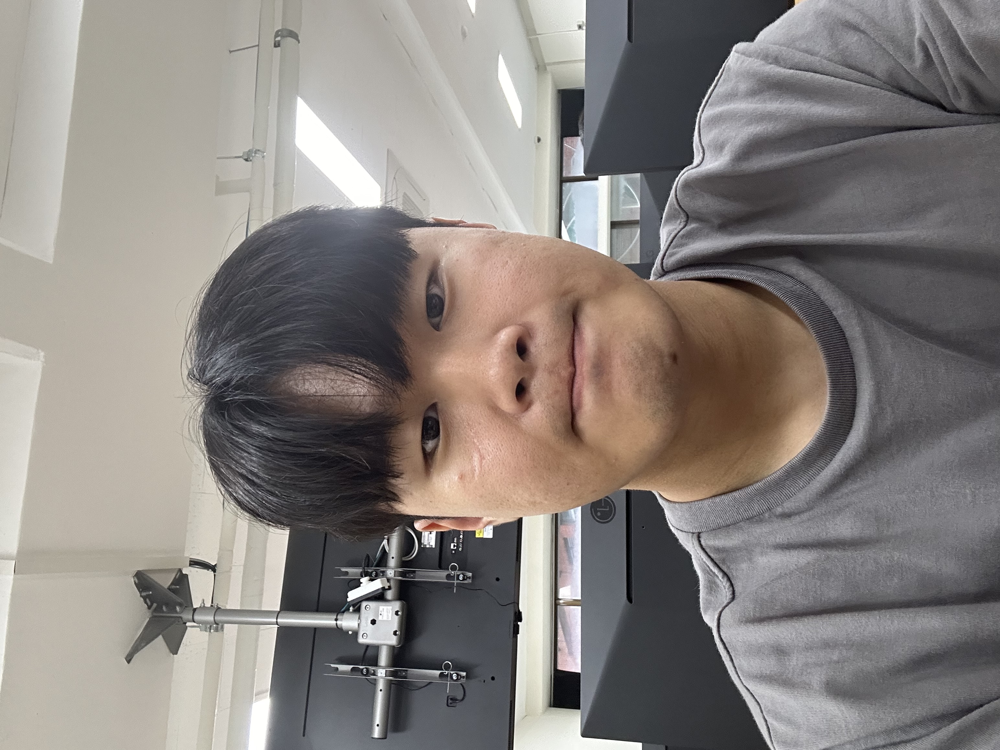

나의 자기소개
목차
이름
학과
학번
나이
사진
취미
좋아하는 영화
좋아하는 가수
좋아하는 음식
이번학기의 시간표
이름
유창민
학과
바이오메디컬공학과
학번
201902332
나이
22
유창민의 사진

취미
게임
영화감상
음악듣기
좋아하는 영화의 예고편
좋아하는 가수 정보
Green day
좋아하는 음식
라면
피자
파스타
이번학기의 시간표
3학년 2학기 시간표
시간
월
화
수
목
금
1
2
의료영상처리
BME캡스톤
3
컴퓨팅사고
HUFS PATHFINDER
4
5
컴퓨터프로그래밍
의료영상처리
6
7
일반생물학
바이오메디컬특강
웹프로그래밍
컴퓨터프로그래밍
8
9